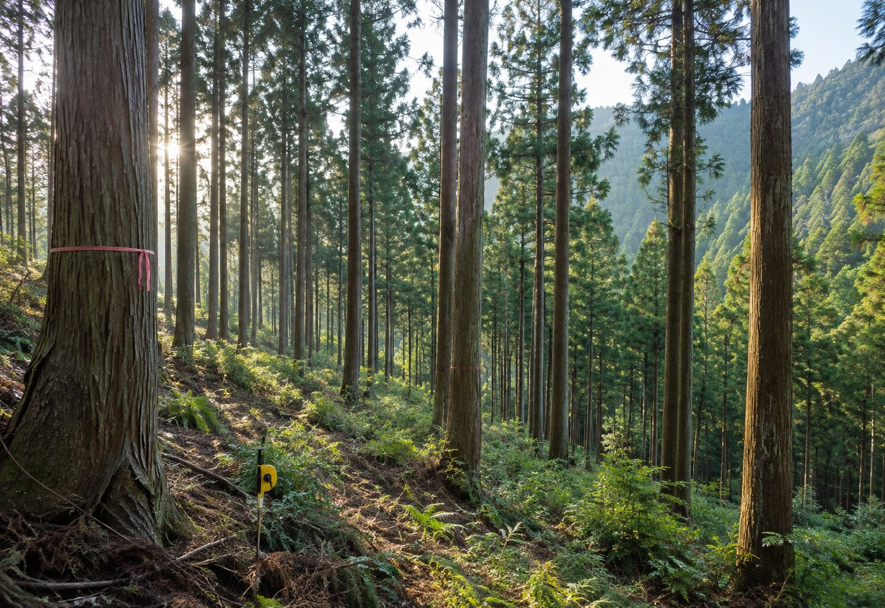
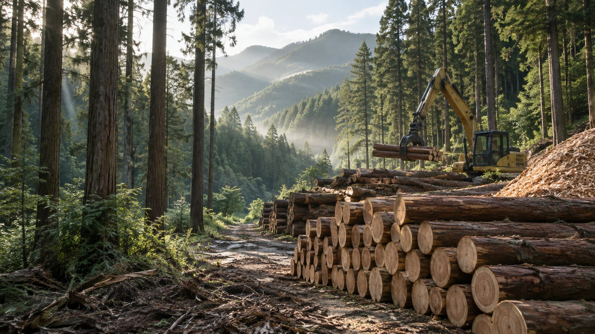
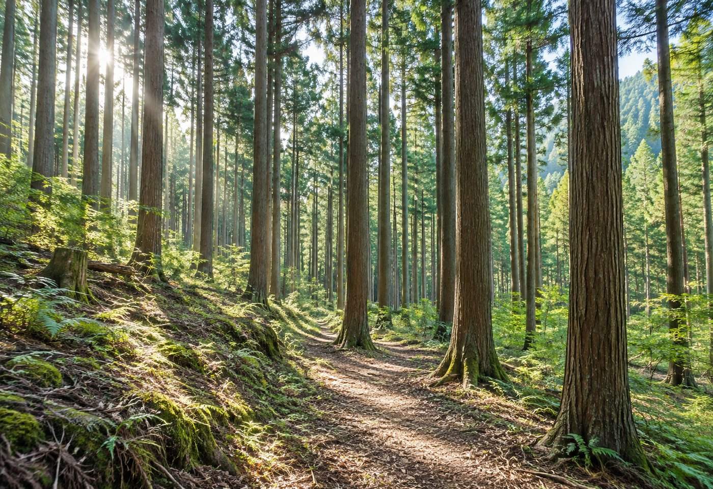
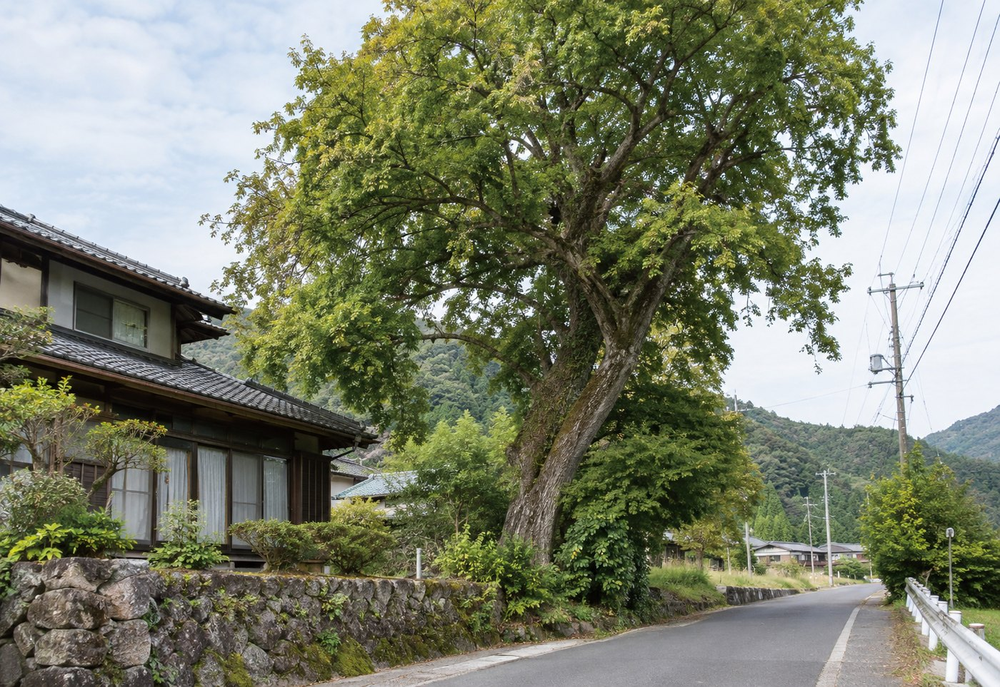
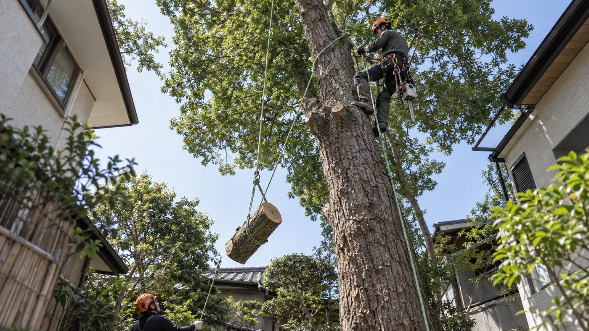
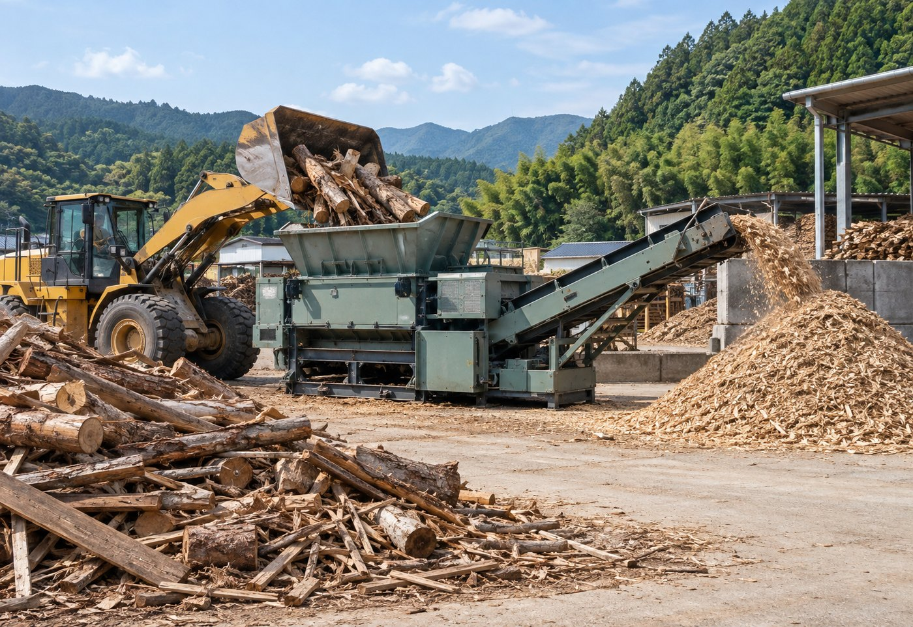
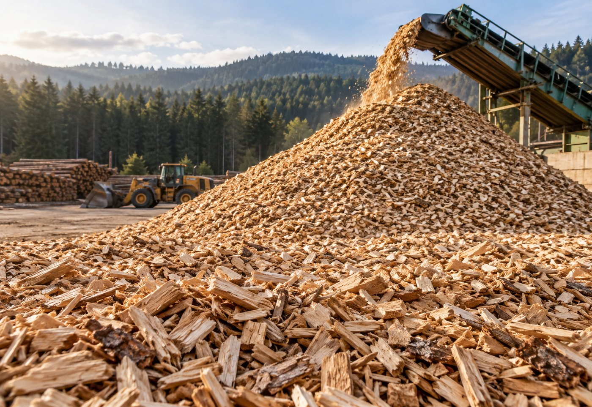
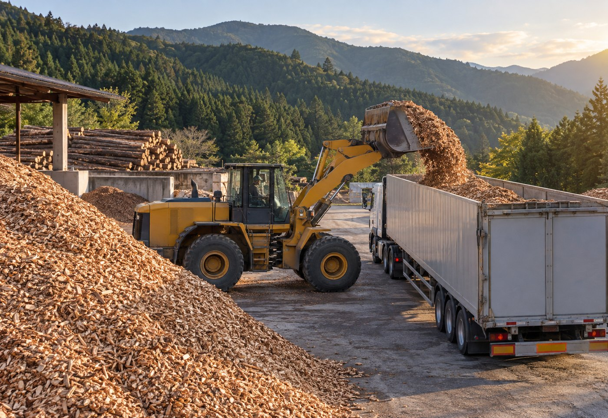

01
STANDING TIMBER PURCHASE
立木買取
山林にある立木の状態や立地条件を確認し、条件に応じて買取を行います。買取後の伐採・集積・搬出・運搬まで、必要な工程を一貫してご相談いただけます。
詳細を見る 株式会社ClearthForest Resource Company
株式会社ClearthForest Resource Company

OUR BUSINESS
森林から資源へ。
Clearthの事業。
豊かな森を、次の世代へ。森林の価値をつなぎ、持続可能な社会の実現に貢献します。
FROM FOREST
TO RESOURCE
山林の状況を見極め、必要な伐採や整備を行い、木材を次の用途へつなげる。Clearthは、それぞれの工程を切り離さず、地域の森林資源を生かす7つの事業に取り組んでいます。

STANDING TIMBER PURCHASE
山林にある立木の状態や立地条件を確認し、条件に応じて買取を行います。買取後の伐採・集積・搬出・運搬まで、必要な工程を一貫してご相談いただけます。
詳細を見る

HAZARDOUS TREE REMOVAL
家屋・道路・電線などの近くにあり、倒木や落枝のおそれがある木に対応します。周囲の状況を確認し、安全に配慮した方法をご提案します。
詳細を見る

PRIMARY WOOD CRUSHING
受け入れた木材を、次の利用につなげるために前処理・破砕します。単なる処分ではなく、木材資源を再び生かすための入口となる工程です。
詳細を見る
WOOD CHIP PRODUCTION
破砕した木材を選別・品質管理し、用途に応じた木質チップへ加工します。木材の特性を見ながら、次の利用に適した製品へ仕上げます。
詳細を見る
BIOMASS FUEL SUPPLY
製造した木質チップを、木質バイオマス燃料として発電所などへ供給します。森林から生まれた資源を、地域や社会の次のエネルギーへつなげます。
詳細を見る